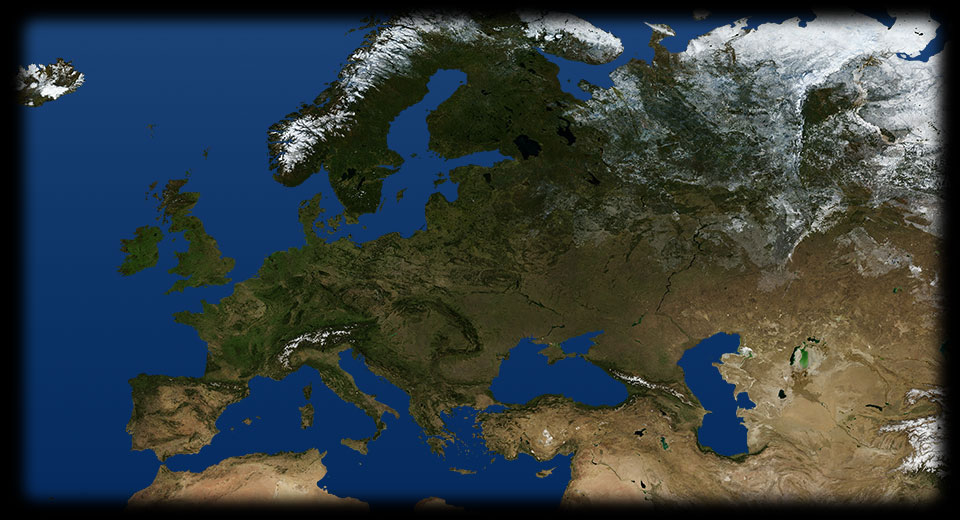

- 375 650
- 300 340
- 230 125
- 250 250
- 240 439
- 290 310
- 275 270
-
ARMENIA
Con l'entrata in guerra della Turchia il governo turco mette in atto il genocidio e la deportazione in massa della popolazione armena: in questa fotografia vediamo un accampamento di rifugiati a Port Said. CARSO
Numerosi intellettuali e artisti italiani combattono durante la prima guerra mondiale: qui vediamo il poeta Giuseppe Ungaretti in uniforme sul Carso.IRLANDA
Per la prima volta nella storia la guerra non si combatte più soltanto sulla terra, ma anche nell'aria e perfino sotto il mare: in quest'illustrazione vediamo l'affondamento del transatlantico britannico Lusitania avvenuto nel 1915 ad opera di un sommergibile tedesco.ARRAS
L'impiego massiccio di armi chimiche è uno degli aspetti più devastanti del conflitto: in questo grande dipinto del pittore americano John Singer Sargent vediamo un gruppo di soldati inglesi accecati dai gas dopo una battaglia sul fronte delle Fiandre.FRONTE ORIENTALE
Primavera 1915: Germania e Austria lanciano una potente offensiva contro la Russia, che retrocede dalla Polonia, Galizia, Bucovina, fino alla Beresina. Anche nei Balcani la situazione peggiora per l'Intesa: nel settembre 1915 la Bulgaria entra in guerra a fianco degli Imperi centrali e gli inglesi vengono battuti dalla Turchia nello stretto dei Dardanelli.FRONTE ITALIANO
26 aprile 1915: Trattato di Londra. Il governo Calandra firma un patto segreto con la Triplice intesa (franco inglese) che assicura all'Italia compensi territoriali (Trento, Trieste, Istria, Dalmazia, possedimenti coloniali ecc.). Il 24 maggio 1915 l'Italia entra in guerra a fianco dell'Intesa, contro l'Austria Ungheria. Nel giugno-dicembre 1915 l'esercito italiano, guidato dal generale Cadorna, sferra offensive contro gli austriaci nella zona dell'Isonzo e del Carso, ma senza alcun risultato. L'esercito ha un'organizzazione scarsissima, ed è poco equipaggiato. Alla fine dei combattimenti è allo stremo delle forze..FRONTE FRANCESE
Gli eserciti restano pressoché immobili per tutto il 1915. Ma le perdite aumentano da entrambe le parti.